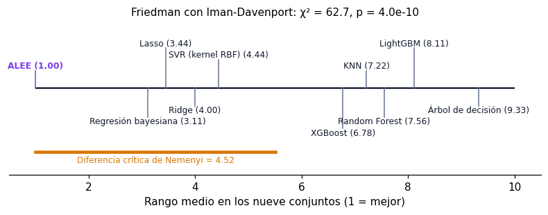
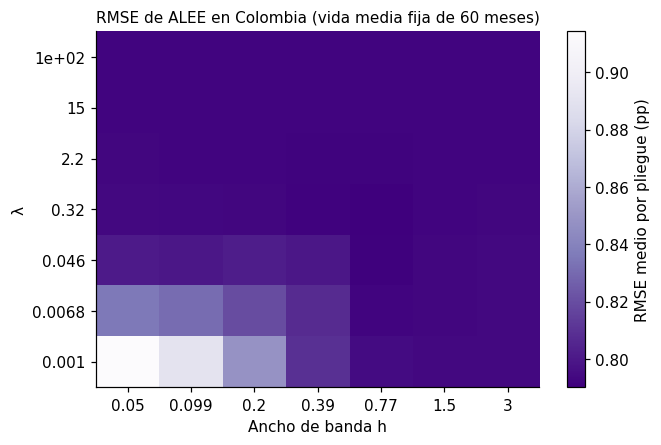
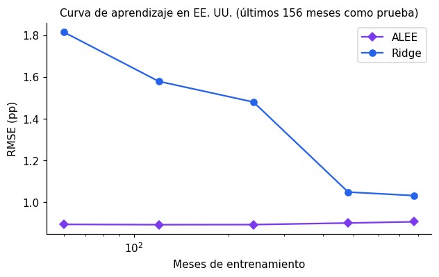

Evaluación ampliada y robustez#
Conjuntos de datos#
Además de Colombia se usaron ocho tasas de desempleo mensuales sin desestacionalizar, de fuentes públicas y elegidas antes de ver resultados sobre ellas. Tres se fijaron en el protocolo original: Estados Unidos (FRED), España (Eurostat) y México (OCDE, que redistribuye la encuesta del INEGI). Las otras cinco (Canadá, Australia, Japón, Alemania y Corea del Sur) se tomaron de la OCDE con criterios de inclusión fijados antes de descargarlas: serie mensual sin desestacionalizar, al menos 240 meses consecutivos y sin promedios móviles de tres meses. Como esos países no tienen indicadores de áreas metropolitanas, en ellos todos los modelos usan las 14 variables nacionales.
obj = D.paper_targets().assign(Conjunto=lambda d: d["conjunto"].map(D.DATASETS))
obj = obj[["Conjunto", "desde", "hasta", "meses", "media", "sd", "min", "max", "asimetria", "atipicos"]]
obj.columns = ["Conjunto", "Desde", "Hasta", "Meses", "Media (%)", "Desv. (pp)", "Mín. (%)", "Máx. (%)", "Asimetría", "Atípicos"]
obj.set_index("Conjunto").round(2)
| Desde | Hasta | Meses | Media (%) | Desv. (pp) | Mín. (%) | Máx. (%) | Asimetría | Atípicos | |
|---|---|---|---|---|---|---|---|---|---|
| Conjunto | |||||||||
| Colombia | 2001-01 | 2025-12 | 300 | 11.61 | 2.45 | 7.02 | 21.97 | 1.09 | 2 |
| Estados Unidos | 1948-01 | 2026-10 | 946 | 5.65 | 1.74 | 2.40 | 14.40 | 0.84 | 5 |
| España | 1986-04 | 2026-09 | 486 | 16.09 | 4.77 | 7.80 | 27.10 | 0.20 | 1 |
| México | 2000-01 | 2026-09 | 321 | 3.80 | 0.95 | 2.15 | 6.43 | 0.44 | 1 |
| Canadá | 1955-01 | 2026-10 | 862 | 7.23 | 2.20 | 1.90 | 14.30 | 0.30 | 14 |
| Australia | 1978-02 | 2026-09 | 584 | 6.49 | 1.87 | 3.25 | 12.13 | 0.70 | 1 |
| Japón | 1955-01 | 2026-09 | 861 | 2.73 | 1.20 | 0.90 | 5.80 | 0.60 | 9 |
| Alemania | 1991-01 | 2026-09 | 429 | 6.47 | 2.57 | 2.80 | 12.20 | 0.14 | 0 |
| Corea del Sur | 1989-01 | 2026-09 | 453 | 3.40 | 1.10 | 1.80 | 8.80 | 1.87 | 5 |
Los niveles van del 0.9 % de Japón al 27.1 % de España, y la distribución es asimétrica a la derecha en todos los conjuntos: los choques suben el desempleo de golpe y la recuperación es lenta.
Desempeño en los nueve conjuntos#
RMSE medio de los cinco pliegues externos. La fila en negrita de cada conjunto es el menor error:
tabla = D.paper_table().rename(index=D.DATASETS, columns=NOMBRES)
tabla.round(3).style.highlight_min(axis=1, props="font-weight: bold; background-color: #f5f3ff").format("{:.3f}")
| modelo | ALEE | KNN | Ridge | Lasso | Regresión bayesiana | Árbol de decisión | Random Forest | XGBoost | SVR (kernel RBF) | LightGBM |
|---|---|---|---|---|---|---|---|---|---|---|
| conjunto | ||||||||||
| Colombia | 0.817 | 1.251 | 1.219 | 1.601 | 1.289 | 1.475 | 1.298 | 1.284 | 1.283 | 1.452 |
| Estados Unidos | 0.380 | 0.820 | 0.555 | 0.541 | 0.551 | 0.748 | 0.737 | 0.611 | 0.712 | 0.720 |
| España | 0.280 | 1.613 | 0.581 | 0.369 | 0.556 | 3.333 | 1.735 | 1.569 | 0.820 | 1.854 |
| México | 0.281 | 0.533 | 0.386 | 0.373 | 0.386 | 0.738 | 0.524 | 0.542 | 0.369 | 0.549 |
| Canadá | 0.437 | 1.052 | 0.731 | 0.601 | 0.631 | 1.090 | 0.953 | 0.862 | 0.730 | 0.799 |
| Australia | 0.240 | 0.656 | 0.468 | 0.359 | 0.342 | 0.702 | 0.686 | 0.606 | 0.440 | 0.647 |
| Japón | 0.149 | 0.510 | 0.199 | 0.198 | 0.188 | 0.616 | 0.521 | 0.562 | 0.337 | 0.542 |
| Alemania | 0.226 | 0.816 | 0.345 | 0.298 | 0.288 | 0.864 | 0.852 | 0.731 | 0.395 | 0.858 |
| Corea del Sur | 0.325 | 0.789 | 0.472 | 0.464 | 0.438 | 0.728 | 0.786 | 0.805 | 0.503 | 0.832 |
ALEE tiene el menor RMSE en 9 de 9 conjuntos. Frente al mejor modelo de comparación, el error baja entre 21% (Japón) y 33% (Colombia).
filas = []
for m in ["MAE", "MAPE", "R2", "MASE"]:
tm = D.paper_table(m)
mejor = tm.idxmax(axis=1) if m == "R2" else tm.idxmin(axis=1)
filas.append({"Métrica": m, "Conjuntos donde ALEE es el mejor": f"{(mejor == 'ALEE').sum()} de {len(tm)}",
"ALEE en Colombia": round(tm.loc["colombia", "ALEE"], 3)})
pd.DataFrame(filas).set_index("Métrica")
| Conjuntos donde ALEE es el mejor | ALEE en Colombia | |
|---|---|---|
| Métrica | ||
| MAE | 9 de 9 | 0.586 |
| MAPE | 9 de 9 | 5.152 |
| R2 | 9 de 9 | 0.660 |
| MASE | 9 de 9 | 0.550 |
El resultado no depende de la métrica: ALEE también es el mejor en MAE, MAPE, R² y MASE en los nueve conjuntos. El MASE se escala con el error absoluto medio del pronóstico ingenuo estacional dentro del entrenamiento de cada pliegue [HK06].
Pruebas por conjunto y entre conjuntos#
pr = D.paper_tests()
resumen = pr.groupby("conjunto").agg(
dm=("dm_p_holm", lambda p: f"{(p < 0.05).sum()} de {len(p)}"), dm_max=("dm_p_holm", "max"),
gw=("gw_p_holm", lambda p: f"{(p < 0.05).sum()} de {len(p)}"), gw_max=("gw_p_holm", "max"),
bayes=("p_bayes_mejor", "min")).reindex(list(D.DATASETS))
resumen.index = resumen.index.map(D.DATASETS)
resumen["dm_max"] = resumen["dm_max"].map(p_fmt)
resumen["gw_max"] = resumen["gw_max"].map(p_fmt)
resumen.columns = ["DM-HLN significativas", "p máximo DM-HLN", "GW significativas", "p máximo GW", "P(ALEE mejor) mínima"]
resumen.round(3)
| DM-HLN significativas | p máximo DM-HLN | GW significativas | p máximo GW | P(ALEE mejor) mínima | |
|---|---|---|---|---|---|
| conjunto | |||||
| Colombia | 9 de 9 | 0.007 | 9 de 9 | 0.020 | 0.822 |
| Estados Unidos | 9 de 9 | 8.4e-07 | 9 de 9 | 5.6e-09 | 0.851 |
| España | 9 de 9 | 2.8e-08 | 9 de 9 | 1.9e-14 | 0.662 |
| México | 9 de 9 | 1.6e-04 | 9 de 9 | 4.8e-04 | 0.745 |
| Canadá | 9 de 9 | 6.4e-13 | 9 de 9 | 4.4e-16 | 0.794 |
| Australia | 9 de 9 | 2.6e-13 | 9 de 9 | 4.2e-12 | 0.938 |
| Japón | 9 de 9 | 4.6e-12 | 9 de 9 | 6.7e-11 | 0.928 |
| Alemania | 9 de 9 | 2.7e-08 | 9 de 9 | 3.4e-07 | 0.865 |
| Corea del Sur | 9 de 9 | 3.4e-04 | 9 de 9 | 1.5e-04 | 0.811 |
En los nueve conjuntos, Diebold-Mariano-HLN y Giacomini-White con Holm rechazan la igualdad frente a cada uno de los nueve modelos. Entre conjuntos, la prueba de Friedman compara los rangos de los diez modelos:
fr = D.paper_friedman()
rangos = pd.Series(fr["avg_ranks"]).sort_values()
fig, ax = plt.subplots(figsize=(9, 2.6))
ax.hlines(0, 1, len(rangos), color="#0f172a")
for i, (m, r) in enumerate(rangos.items()):
y = 0.35 + 0.22 * (i % 3) if i % 2 == 0 else -0.35 - 0.22 * (i % 3)
ax.plot([r, r], [0, y], color=VIOLETA if m == "ALEE" else GRIS, lw=1)
ax.text(r, y, f"{NOMBRES[m]} ({r:.2f})", ha="center", va="bottom" if y > 0 else "top", fontsize=8,
color=VIOLETA if m == "ALEE" else "#0f172a", fontweight="bold" if m == "ALEE" else "normal")
ax.plot([1, 1 + fr["cd"]], [-1.25, -1.25], color=AMBAR, lw=3)
ax.text(1 + fr["cd"] / 2, -1.33, f"Diferencia crítica de Nemenyi = {fr['cd']:.2f}", ha="center", va="top", fontsize=8, color=AMBAR)
ax.set_xlim(0.5, len(rangos) + 0.5); ax.set_ylim(-1.7, 1.3); ax.set_yticks([]); ax.spines["left"].set_visible(False)
ax.set_xlabel("Rango medio en los nueve conjuntos (1 = mejor)")
ax.set_title(f"Friedman con Iman-Davenport: χ² = {fr['chi2']:.1f}, p = {p_fmt(fr['p_value'])}", fontsize=10)
plt.show()

entre = D.paper_between()
t = pd.DataFrame({"Modelo": entre["baseline"].map(D.MODEL_LABELS),
"Conjuntos que gana ALEE": entre["conjuntos_ALEE_gana"].astype(str) + " de 9",
"Wilcoxon p (Holm)": entre["wilcoxon_p_holm"].round(3),
"Conover p (Holm)": entre["conover_p_holm"].map(p_fmt),
"P(ALEE mejor), signed-rank bayesiano": entre["p_bayes_mejor"].round(3)})
t.set_index("Modelo")
| Conjuntos que gana ALEE | Wilcoxon p (Holm) | Conover p (Holm) | P(ALEE mejor), signed-rank bayesiano | |
|---|---|---|---|---|
| Modelo | ||||
| KNN | 9 de 9 | 0.035 | 3.9e-11 | 1.0 |
| Ridge | 9 de 9 | 0.035 | 0.002 | 1.0 |
| Lasso | 9 de 9 | 0.035 | 0.020 | 1.0 |
| Regresión bayesiana | 9 de 9 | 0.035 | 0.071 | 1.0 |
| Árbol de decisión | 9 de 9 | 0.035 | 1.8e-16 | 1.0 |
| Random Forest | 9 de 9 | 0.035 | 5.5e-12 | 1.0 |
| XGBoost | 9 de 9 | 0.035 | 5.2e-10 | 1.0 |
| SVR (kernel RBF) | 9 de 9 | 0.035 | 2.3e-04 | 1.0 |
| LightGBM | 9 de 9 | 0.035 | 2.1e-13 | 1.0 |
ALEE queda primero en los nueve conjuntos (rango medio 1.00). Con nueve conjuntos, el Wilcoxon no puede bajar de p = 0.0039 sin corregir; tras Holm queda en 0.035 frente a cada modelo. El Conover distingue a ALEE de ocho de los nueve modelos; frente a la regresión bayesiana no alcanza la significancia. Nueve conjuntos dan una potencia moderada: la guía recomienda diez o más para Friedman.
Ablación#
Cada variante quita una pieza de ALEE y se compara con el modelo completo con Diebold-Mariano-HLN y Holm. Las hipótesis, anunciadas en la metodología del paper, son que cada pieza mejora al modelo: la localización por estado (H1), la regularización adaptativa al tamaño efectivo (H2), el previo global (H3), la combinación aprendida frente al promedio simple (H4) y la combinación frente a cada experto solo (H5).
abl = D.paper_ablation()
tabla = abl.pivot(index="variante", columns="conjunto", values="RMSE").reindex(list(D.ABLATION_ORDER))[list(D.DATASETS)]
tabla.columns = [D.DATASETS[c] for c in tabla.columns]
sig = abl[(abl["dm_p_holm"] < 0.05) & (abl["dif_perdida"] < 0)].groupby("variante")["conjunto"].apply(
lambda s: ", ".join(D.DATASETS[c] for c in s))
tabla["Significativamente peor que ALEE completo en"] = sig.reindex(tabla.index).fillna("—")
tabla.round(3)
| Colombia | Estados Unidos | España | México | Canadá | Australia | Japón | Alemania | Corea del Sur | Significativamente peor que ALEE completo en | |
|---|---|---|---|---|---|---|---|---|---|---|
| variante | ||||||||||
| ALEE completo | 0.817 | 0.380 | 0.280 | 0.281 | 0.437 | 0.240 | 0.149 | 0.226 | 0.325 | — |
| Sin localización | 0.797 | 0.382 | 0.280 | 0.285 | 0.438 | 0.240 | 0.154 | 0.222 | 0.328 | México, Japón |
| Sin λ adaptativa | 0.825 | 0.383 | 0.280 | 0.280 | 0.439 | 0.241 | 0.151 | 0.223 | 0.325 | Canadá, Japón |
| Previo uniforme | 0.822 | 0.382 | 0.281 | 0.282 | 0.437 | 0.239 | 0.148 | 0.223 | 0.328 | — |
| Promedio simple | 1.035 | 0.444 | 0.304 | 0.310 | 0.469 | 0.279 | 0.142 | 0.244 | 0.348 | Colombia, Estados Unidos, España, México, Cana... |
| Solo persistencia | 1.273 | 0.536 | 0.325 | 0.361 | 0.591 | 0.343 | 0.167 | 0.271 | 0.393 | Colombia, Estados Unidos, España, México, Cana... |
| Solo núcleo | 1.252 | 0.532 | 0.330 | 0.362 | 0.577 | 0.339 | 0.165 | 0.270 | 0.387 | Colombia, Estados Unidos, España, México, Cana... |
| Solo estacional | 0.780 | 0.391 | 0.279 | 0.283 | 0.513 | 0.251 | 0.174 | 0.231 | 0.318 | Canadá, Australia, Japón |
Sin localización: significativamente peor en 2 de 9 conjuntos
Sin λ adaptativa: significativamente peor en 2 de 9 conjuntos
Previo uniforme: significativamente peor en 0 de 9 conjuntos
Promedio simple: significativamente peor en 7 de 9 conjuntos
Solo persistencia: significativamente peor en 9 de 9 conjuntos
Solo núcleo: significativamente peor en 9 de 9 conjuntos
Solo estacional: significativamente peor en 3 de 9 conjuntos
Variantes significativamente mejores que ALEE completo en algún conjunto: 0
La mayor parte de la ventaja viene de los expertos. La combinación aprendida supera al promedio simple en siete de los nueve conjuntos (H4) y, en Canadá, Australia y Japón, también al experto estacional solo (H5). La localización por estado, que era la idea central del modelo, solo aporta de forma significativa en México y Japón (H1), y la regularización adaptativa en Canadá y Japón (H2). El previo global no cambia el resultado en ningún conjunto (H3). El cambio de ganador según el régimen existe entre los modelos genéricos, pero no tanto entre los expertos de ALEE, porque el estacional domina en casi todos los regímenes [Tim06].
Robustez#
Semillas del optimizador#
sem = pd.read_csv(R / "sensibilidad_semillas.csv")
sem = sem[sem["semilla"].astype(str).str.isdigit()]
t = sem.groupby("conjunto")["rmse_medio"].agg(["mean", "std", "min", "max"]).reindex([c for c in D.DATASETS if c in set(sem["conjunto"])])
t.index = t.index.map(D.DATASETS)
t.columns = ["RMSE medio", "Desviación", "Mínimo", "Máximo"]
t.round(4)
| RMSE medio | Desviación | Mínimo | Máximo | |
|---|---|---|---|---|
| conjunto | ||||
| Colombia | 0.8206 | 0.0026 | 0.8173 | 0.8242 |
| Estados Unidos | 0.3806 | 0.0008 | 0.3796 | 0.3816 |
| España | 0.2802 | 0.0004 | 0.2798 | 0.2808 |
| México | 0.2804 | 0.0007 | 0.2793 | 0.2811 |
Con las semillas 42 a 46 del optimizador bayesiano, el RMSE de ALEE cambia en la tercera cifra decimal: la búsqueda de hiperparámetros es estable.
Sensibilidad a los hiperparámetros#
sh = pd.read_csv(R / "colombia" / "sensibilidad_hiperparametros.csv")
mapa = sh.pivot(index="lam", columns="bandwidth", values="rmse_medio")
fig, ax = plt.subplots(figsize=(6.5, 4.2))
im = ax.imshow(mapa.values, origin="lower", cmap="Purples_r", aspect="auto")
ax.set_xticks(range(mapa.shape[1])); ax.set_xticklabels([f"{v:.2g}" for v in mapa.columns])
ax.set_yticks(range(mapa.shape[0])); ax.set_yticklabels([f"{v:.2g}" for v in mapa.index])
ax.set_xlabel("Ancho de banda h"); ax.set_ylabel("λ")
ax.set_title("RMSE de ALEE en Colombia (vida media fija de 60 meses)", fontsize=10)
fig.colorbar(im, ax=ax, label="RMSE medio por pliegue (pp)")
plt.show()
print(f"El RMSE va de {sh['rmse_medio'].min():.3f} a {sh['rmse_medio'].max():.3f}; "
f"la mitad de las {len(sh)} combinaciones queda por debajo de {sh['rmse_medio'].median():.3f}.")

El RMSE va de 0.790 a 0.914; la mitad de las 49 combinaciones queda por debajo de 0.793.
El error es casi plano en una región amplia de la rejilla. Solo empeora con un ancho de banda muy pequeño y λ muy baja, cuando cada pronóstico depende de muy pocos meses parecidos. En toda la rejilla ALEE queda muy por debajo del mejor modelo de comparación en Colombia.
Tamaño de muestra#
ca = pd.read_csv(R / "curva_aprendizaje_eeuu.csv")
ca = ca[ca["modelo"].isin(["ALEE", "Ridge"])]
fig, ax = plt.subplots(figsize=(6.5, 3.6))
for m, color, mk in [("ALEE", VIOLETA, "D"), ("Ridge", AZUL, "o")]:
g = ca[ca["modelo"] == m]
ax.plot(g["meses_entrenamiento"], g["rmse"], marker=mk, color=color, label=NOMBRES[m])
ax.set_xscale("log"); ax.set_xlabel("Meses de entrenamiento"); ax.set_ylabel("RMSE (pp)")
ax.set_title("Curva de aprendizaje en EE. UU. (últimos 156 meses como prueba)", fontsize=10); ax.legend()
plt.show()

ALEE alcanza su error con solo 60 meses de entrenamiento y casi no cambia al tener más historia, porque sus expertos aprovechan la estructura de la serie desde el principio. Ridge necesita mucha más historia y aun con 777 meses queda por encima.
Errores por régimen de volatilidad#
reg = D.paper_regimes()
mejor = reg.loc[reg.groupby(["conjunto", "volatilidad"])["rmse"].idxmin()]
print(f"ALEE es el mejor modelo en {(mejor['modelo'] == 'ALEE').sum()} de {len(mejor)} combinaciones de conjunto y tercil de volatilidad.")
t = reg[reg["conjunto"] == "colombia"].pivot(index="modelo", columns="volatilidad", values="rmse")[["baja", "media", "alta"]]
t.index = t.index.map(NOMBRES)
t.columns = ["Volatilidad baja", "Media", "Alta"]
t.sort_values("Media").round(3)
ALEE es el mejor modelo en 27 de 27 combinaciones de conjunto y tercil de volatilidad.
| Volatilidad baja | Media | Alta | |
|---|---|---|---|
| modelo | |||
| ALEE | 1.120 | 0.653 | 0.762 |
| Ridge | 1.544 | 1.000 | 1.432 |
| KNN | 1.509 | 1.075 | 1.490 |
| SVR (kernel RBF) | 1.596 | 1.078 | 1.502 |
| XGBoost | 1.346 | 1.089 | 2.091 |
| Random Forest | 1.423 | 1.109 | 1.853 |
| Árbol de decisión | 1.538 | 1.141 | 2.345 |
| Regresión bayesiana | 1.636 | 1.204 | 1.590 |
| LightGBM | 1.438 | 1.275 | 2.240 |
| Lasso | 1.908 | 1.589 | 2.014 |
Incertidumbre#
c = D.conformal()["ALEE"]
f = c["forward"]
print(f"Intervalo de predicción conforme al 90 % de ALEE en Colombia: semiancho de {c['halfwidth_90']:.2f} pp. "
f"Medida hacia adelante (cada mes con los errores anteriores), la cobertura fue {f['coverage']:.1%} en {f['n']} meses, "
f"con un ancho medio de {f['mean_width']:.2f} pp.")
Intervalo de predicción conforme al 90 % de ALEE en Colombia: semiancho de 1.18 pp. Medida hacia adelante (cada mes con los errores anteriores), la cobertura fue 93.8% en 192 meses, con un ancho medio de 2.55 pp.
La cobertura medida hacia adelante queda cerca de la nominal [AB23].
Costo computacional#
cost = pd.read_csv(R / "costo_computacional.csv")
cost = cost[cost["modelo"].isin(D.PAPER_MODELS)].set_index("modelo")
cost.index = cost.index.map(NOMBRES)
cost = cost.assign(**{"Entrenamiento (ms)": cost["entrenamiento_s"] * 1000, "Inferencia (ms)": cost["inferencia_s"] * 1000})
cost[["Entrenamiento (ms)", "Inferencia (ms)", "memoria_pico_MB", "parametros"]].rename(
columns={"memoria_pico_MB": "Memoria pico (MB)", "parametros": "Parámetros"}).sort_values("Entrenamiento (ms)").round(2)
| Entrenamiento (ms) | Inferencia (ms) | Memoria pico (MB) | Parámetros | |
|---|---|---|---|---|
| modelo | ||||
| Ridge | 2.03 | 0.38 | 0.37 | 18 |
| Lasso | 2.29 | 0.40 | 0.18 | 18 |
| KNN | 2.34 | 4.62 | 1.00 | 4302 |
| Regresión bayesiana | 2.48 | 0.71 | 0.58 | 18 |
| Árbol de decisión | 3.58 | 0.32 | 0.17 | 77 |
| SVR (kernel RBF) | 11.27 | 3.68 | 0.44 | 4285 |
| LightGBM | 27.37 | 1.31 | 10.21 | 1343 |
| XGBoost | 50.38 | 1.42 | 102.02 | 615 |
| Random Forest | 333.77 | 23.03 | 0.75 | 36808 |
| ALEE | 693.90 | 543.48 | 27.20 | 1021 |
Medido en el último pliegue de Colombia, con los hiperparámetros de la búsqueda bayesiana y cada modelo en un proceso independiente. ALEE es el más lento, pero entrena en menos de un segundo y pronostica 48 meses en medio segundo: para un pronóstico mensual ese costo es irrelevante.